정보처리기사(구) (2005-09-04 기출문제)
1과목: 데이터 베이스
1. 관계 대수(Relational Algebra)의 연산자 중에서 두 릴레이션(Relation)의 교차 곱을 수행하기 때문에 두 릴레이션의 공통 튜플 수와 관계가 없는 것은?
- UNION
- INTERSECTION
- DIFFERENCE
- CARTESIAN PRODUCT
(정답률: 51%)

2. 데이터의 중복으로 인해 릴레이션 조작시 생기는 이상 (anomaly) 현상에 관련된 설명 중 옳지 않은 것은?(문제 오류로 나, 다 번을 정답 처리한 문제입니다. 여기서는 1번을 정답으로 처리 하겠습니다.)
- 한 튜플을 삭제함으로써 연쇄 삭제 현상으로 인한 정보의 손실을 삭제 이상이라고 한다.
- 어떤 데이터를 삽입할 때 불필요하고 원하지 않는 데이터도 함께 삽입해야 되거나 삽입이 되지 않는 경우를 삽입 이상이라고 한다.
- 데이터 갱신시 중복된 튜플들 중에서 일부 튜플에 잘 못된 값이 갱신될 경우 정보의 모순성이 생기는데 이를 갱신 이상이라고 한다.
- 관계 모델에서는 애트리뷰트들 간에 존재하는 여러 종속관계를 하나의 릴레이션에 표현하기 때문에 이상 현상이 발생한다.
(정답률: 81%)
3. 데이터베이스 관리자(DBA)의 임무로 거리가 먼 것은?
- 개념 스키마 및 내부 스키마를 정의한다.
- 데이터를 저장하고 저장된 데이터를 사용한다.
- 장애에 대비한 예비조치와 회복에 대한 전략을 수립한다.
- 접근 권한을 부여한다.
(정답률: 62%)
4. 트랜잭션의 실행을 성공적으로 완료되었음을 선언하는 SQL 문은?
- Commit
- Rollback
- Exec
- End
(정답률: 81%)
5. 데이터베이스의 설계과정 순서가 알맞게 나열된 것은?
- 기획-개념적설계-요구설계-물리적설계-논리적설계
- 기획-요구설계-개념적설계-논리적설계-물리적설계
- 기획-논리적설계-요구설계-물리적설계-개념적설계
- 기획-요구설계-물리적설계-논리적설계-개념적설계
(정답률: 87%)
6. 데이터베이스의 구성 요소 중 데이터베이스가 표현하려고 하는 유형, 무형의 정보대상으로 존재하면서 서로 구별될 수 있는 것은?
- relation
- attribute
- tuple
- entity
(정답률: 42%)
7. 관계 데이터 모델, 계층 데이터 모델, 네트워크 데이터 모델의 가장 큰 차이점은 무엇인가?
- 개체의 표현 방법
- 속성의 표현 방법
- 관계의 표현 방법
- 데이터 저장 방법
(정답률: 62%)
8. 관계 모델에서 릴레이션(relation)이 가지는 성질이 아닌 것은?
- 튜플(tuple)의 유일성
- 속성의 복합값
- 속성의 무순서
- 튜플의 무순서
(정답률: 73%)
9. 1의 보수에 의한 표현 방식으로(-15)10진법을 옳게 표현한 것은?
- (0000000000001111)2진법
- (0111111111110000)2진법
- (1000000000001111)2진법
- (1111111111110000)2진법
(정답률: 57%)
10. 데이터베이스 설계과정 중 개념적 설계 단계에 대한 설명으로 틀린 것은?
- 산출물로 ER-D가 만들어진다.
- DBMS에 독립적인 개념 스키마를 설계한다.
- 트랜잭션 인터페이스를 설계한다.
- 논리적 설계 단계의 앞 단계에서 수행된다.
(정답률: 54%)
11. 인덱스(Index)에 대한 설명으로 부적절한 것은?(문제 오류로 가, 다번을 정답 처리한 문제입니다. 여기서는 1번을 정답 처리 하겠습니다.)
- 인덱스는 데이터베이스의 물리적 구조와 밀접한 관계가 있다.
- 인덱스는 하나 이상의 필드로 만들어도 된다.
- 레코드의 삽입 삭제가 수시로 일어나는 경우는 인덱스를 최소화한다.
- 인덱스를 통해서 테이블의 레코드에 대한 액세스를 빠르게 수행할 수 있다.
(정답률: 83%)
12. Which is not in the three-schema architecture?
- internal schema
- conceptual schema
- external schema
- procedural schema
(정답률: 74%)
13. 트랜잭션의 실행이 실패하였음을 알리는 연산자는 트랜잭션이 수행한 결과를 원래의 상태로 원상 복귀 시키는 연산은?
- COMMIT 연산
- BACKUP 연산
- LOG 연산
- ROLLBACK 연산
(정답률: 83%)
14. 다음 영문의 괄호에 가장 적합한 것은?
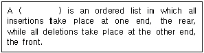
- array
- stack
- tree
- queue
(정답률: 65%)
15. 자료구조에 관한 설명 중 옳지 않은 것은?
- 스택은 LIFO 구조로 복귀주소(return address) 등에 이용된다.
- 큐는 FIFO 구조로 작업 스케줄링 등에 이용된다.
- 트리는 선형 구조이다.
- 데크(Deque)는 서로 다른 방향에서 입·출력이 가능한 구조이다.
(정답률: 76%)
16. 시스템 카탈로그에 대한 설명으로 옳지 않은 것은?
- 시스템 자신이 필요로 하는 여러가지 개체에 대한 정보를 포함한 시스템 데이터베이스이다.
- 개체들로서는 기본 테이블, 뷰, 인덱스, 데이터베이스, 패키지, 접근 권한 등이 있다.
- 카탈로그 자체도 시스템 테이블로 구성되어 있어 일반 이용자도 SQL을 이용하여 내용을 검색해 볼 수 있다.
- 모든 데이터베이스 시스템에서 요구하는 정보는 동일하므로 데이터베이스 시스템의 종류에 관계없이 동일한 구조로 필요한 정보를 제공한다.
(정답률: 76%)
17. 분산 데이터베이스에서 사용자는 데이터가 물리적으로 저장되어 있는 곳을 알 필요 없이 논리적인 입장에서 데이터가 모두 자신의 사이트에 있는 것처럼 처리하는 특성을 무엇이라 하는가?
- 지역 자치성(local autonomy)
- 위치 독립성(location independence)
- 단편 독립성(fragmentation independence)
- 중복 독립성(replication independence)
(정답률: 72%)
18. 운영체제의 작업 스케줄링 등에 응용될 수 있는 가장 적합한 자료구조는?
- 스택(Stack)
- 큐(Queue)
- 연결리스트(Linked List)
- 트리(Tree)
(정답률: 67%)
19. SQL문에서 HAVING을 사용할 수 있는 절은?
- LIKE 절
- WHERE 절
- GROUP BY 절
- ORDER BY 절
(정답률: 68%)
20. 데이터베이스 언어 중 데이터베이스의 객체들, 즉 테이블, 뷰, 인덱스 등에 대한 구조인 스키마를 정의하고 변경하며 삭제할 수 있는 기능을 가진 것은?
- 데이터 정의어(DDL)
- 데이터 제어어(DCL)
- 절차적 데이터 조작어(Procedural DML)
- 비절차적 데이터 조작어(Non-Procedural DML)
(정답률: 67%)
2과목: 전자 계산기 구조
21. 마이크로컴퓨터 내에는 동작 제어에 항상 필요한 모니터 프로그램이 있다. 이러한 모니터 프로그램이 기억되기에 적당한 장소는?
- RAM
- I/O port
- ROM
- CPU
(정답률: 51%)
22. 명령을 수행하는 과정에서 가장 먼저 수행되어야 하는 마이크로 오퍼레이션은?
- PC+1→PC
- MBR→IR
- PC→MAR
- PC→MBR
(정답률: 59%)
23. 주소 설계 시 고려해야 할 점이 아닌 것은?
- 주소를 효율적으로 나타낼 수 있어야 한다.
- 주소 공간과 기억 공간을 독립 시킬 수 있어야 한다.
- 전반적으로 수행 속도가 증가될 수 있도록 해야 한다.
- 주소 공간과 기억 공간은 항상 일치해야 한다.
(정답률: 74%)
24. 한 단어가 25비트로 이루어지고 총 65,536개의 단어를 가진 기억장치가 있다. 이 기억장치를 사용하는 컴퓨터 시스템의 명령어 코드는 하나의 indirect mode bit, operation code, processor register를 나타내는 2비트와 address part로 구분되어 있다. MBR(Memory Buffer Register), MAR(Memory Address Register), PC(Program Counter)에 필요한 각각의 bit는?
- MBR:23, MAR:15, PC:15
- MBR:23, MAR:15, PC:14
- MBR:25, MAR:16, PC:16
- MBR:25, MAR:16, PC:15
(정답률: 62%)
25. Interrupt 발생시 복귀 주소를 기억시키는데 사용되는 것은?
- Accumulator
- Stack
- Queue
- Program Counter
(정답률: 49%)
26. 디코더(decoder)의 출력이 4개일 때 입력은 보통 몇 개인가?
- 1
- 2
- 8
- 16
(정답률: 58%)
27. 다음 진리표와 같은 연산을 하는 gate는?
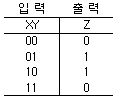
- OR gate
- AND gate
- EXCLUSIVE OR gate
- NAND gate
(정답률: 68%)
28. 다음 회로에서 A=1010, B=1100이 입력되어 있을 때 출력 Y는?
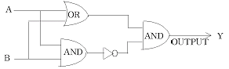
- 1100
- 0011
- 1001
- 0110
(정답률: 64%)
29. 폰 노이만(Von Neumann)형 컴퓨터의 연산자 기능으로 옳지 않은 것은?
- 전달 기능
- 제어 기능
- 추적 기능
- 입출력기능
(정답률: 67%)
30. 다음 마이크로 연산이 나타내는 동작은?
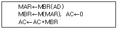
- ADD to AC
- OR to AC
- STORE to AC
- LOAD to AC
(정답률: 51%)
31. 인터럽트 비트(interrupt bits) 10010과 마스크 비트(mask bits) 01110을 상호 AND 하였을 때의 출력 비트는?
- 11100
- 00011
- 11101
- 00010
(정답률: 64%)
32. 명령어의 길이가 16bit이다. 이중 OP code가 5bit, operand가 8bit를 차지한다면 이 명령어가 가질 수 있는 연산자 종류는 최대 몇 개인가?
- 8개
- 16개
- 32개
- 256개
(정답률: 53%)
33. 입·출력 장치를 하드웨어적으로 우선순위를 결정하는 방식은?
- Polling I/O
- Daisy Chain I/O
- Multi interrupt I/O
- Handshaking I/O
(정답률: 64%)
34. 스택(Stack)이 사용하는 주소 방식은?
- zero address
- one address
- two address
- three address
(정답률: 74%)
35. 가상(Virtual) 기억 장치에 대한 설명이 아닌 것은?
- 주목적은 컴퓨터의 속도를 향상시키기 위한 방법이다.
- 주기억장치를 확장한 것과 같은 효과를 제공한다.
- 실제로는 보조기억장치를 사용하는 방법이다.
- 사용자가 프로그램 크기에 제한 받지 않고 실행이 가능하다.
(정답률: 62%)
36. 데이터를 디스크에 분산 저장하는 기술은?
- 디스크 인터리빙
- 블록킹
- 페이징
- 세그멘트
(정답률: 55%)
37. 메모리에 저장된 데이터를 찾는데 있어서 데이터가 있는 메모리 주소보다 데이터 내용으로 접근하여 데이터를 찾는 메모리 장치를 무엇이라 하는가?
- Associative Memory
- Virtual Memory
- Core Memory
- Magnetic Disk
(정답률: 76%)
38. 프로그램카운터가 명령어의 번지와 더해져서 유효번지를 결정하는 어드레싱 모드(addressing mode)는?
- 레지스터 모드
- 상대번지 모드
- 간접번지 모드
- 인덱스드 어드레싱 모드
(정답률: 57%)
39. 사용자가 한번만 내용을 기입할 수 있으나, 지울 수 없는 것은?
- Mask ROM
- PROM
- EPROM
- EEPROM
(정답률: 66%)
40. 인터럽트 발생 시 동작 순서로 옳은 것은?
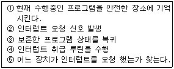
- ② ⑤ ① ④ ③
- ① ② ④ ⑤ ③
- ② ④ ① ⑤ ③
- ② ① ⑤ ④ ③
(정답률: 70%)
3과목: 운영체제
41. 분산 시스템의 장점으로 거리가 먼 것은?
- 자원 공유
- 연산 속도 향상
- 신뢰도 향상
- 보안성 향상
(정답률: 75%)
42. 병행 프로그래밍 기법 하에서 발생할 수 있는 오류에 대한 오류방지 방법이 아닌 것은?
- 세마포어(SEMAPHORE)
- 비동기화(ASYNCHRONIZATION)
- 상호배제(MUTUAL EXCLUSION)
- 모니터(MONITOR)
(정답률: 49%)
43. 컴퓨터 시스템의 일반적인 보안 유지 방식으로 거리가 먼 것은?
- 외부 보안( external security)
- 사용자 인터페이스 보안(user interface security)
- 공용 키 보안(public key security)
- 내부 보안(internal security)
(정답률: 55%)
44. 유닉스 프로세스에서 프로세스에 의해서 사용되는 정적 자료를 저장하는 영역은?
- 자료 영역(data area)
- 코드 영역(code area)
- 스택 영역(stack area)
- 사용자 영역(user area)
(정답률: 53%)
45. 유닉스 시스템에서 사용자가 새로운 프로세스를 생성하기 위하여 부모 프로세스를 복제하는 시스템 호출 방법은?
- getpid( )
- make( )
- fork( )
- exec( )
(정답률: 57%)
46. 주기억장치 배치 전략 기법으로 최초 적합(first fit) 방법을 사용한다고 할 때, 아래와 같은 기억장소 리스트에서 10K 크기의 작업은 어느 기억공간에 할당되는가?
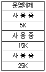
- 1번
- 2번
- 3번
- 할당할 수 없다.
(정답률: 72%)
47. 프로그램 검사 인터럽트가 발생되는 이유로 적합하지 않은 것은?
- 잘못 사용된 명령어(invalid CPU instruction)가 나타날 경우
- 부당한 기억장소 참조와 같은 프로그램 상의 오류가 발생할 경우
- 계산 결과로서 소수점 넘침 현상(fixed-point arithmetic overflow)이 나타날 경우
- 주어진 CPU 사용 시간을 해당 프로세스가 모두 소진 할 경우(interval time going out)
(정답률: 67%)
48. 파일 시스템에 관한 설명 중 옳지 않은 것은?
- 파일(File)은 연관된 데이터들의 집합이다.
- 파일은 각각의 고유한 이름을 갖고 있다.
- 파일은 주로 주기억장치에 저장하여 사용한다.
- 사용자는 파일을 생성하고 수정하며 제거할 수 있다.
(정답률: 62%)
49. 운영체제가 프로세스 관리에 관련되어 수행하는 활동이 아닌 것은?
- 사용자 프로세스와 시스템 프로세스의 생성과 제거
- 프로세스의 중지와 재수행
- 디스크 스케줄링
- 슬립큐, 레디큐 관리
(정답률: 39%)
50. 어떠한 디스크의 요청을 처리하기 위해 헤드가 먼 곳까지 이동하기 전에, 현재 헤드 위치에서 가까운 모든 요구를 먼저 처리함으로서 전반적인 탐색시간을 줄이는 알고리즘은?
- SCAN 스케줄링
- FCFS 스케줄링
- C-SCAN 스케줄링
- SSTF 스케줄링
(정답률: 54%)
51. 다음과 같이 작업이 제출되었다. 이를 SJF 정책을 사용하여 스케줄하면 작업번호 3의 완료 시간은?
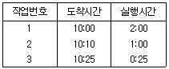
- 13 : 25
- 12 : 25
- 12 : 00
- 14 : 00
(정답률: 56%)
52. 운영체제를 계층구조로 나눌 때 ① -③에 들어갈 내용이 차례로 옳게 나열된 것은?
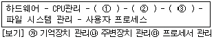
- 가-나-다
- 가-다-나
- 다-나-가
- 다-가-나
(정답률: 31%)
53. 아래와 같은 P, V 연산에 의해 임계 구역의 접근을 제어하는 상호 배제 기법은?
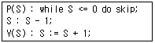
- 데커 알고리즘(Dekker Algorithm)
- 피터슨 알고리즘(Peterson Algorithm)
- Lamport의 빵집 알고리즘
- 세마포어(Semaphore)
(정답률: 57%)
54. 메모리 관리 기법 중에서 서로 떨어져 있는 여러 개의 낭비 공간을 모아서 하나의 큰 기억 공간을 만드는 작업을 무엇이라고 하는가?
- Swapping
- Coalescing
- Compaction
- Paging
(정답률: 46%)
55. 파일디스크립터(File Descriptor)에 대한 설명으로 옳지 않은 것은?
- 파일 디스크립터 내용에는 파일의 ID 번호, 디스크 내 주소, 파일 크기 등에 대한 정보가 수록된다.
- 파일이 액세스되는 동안 운영체제가 관리 목적으로 알아야 할 정보를 모아 놓은 자료구조이다.
- 해당 파일이 Open되면 FCB(File Control Block)가 메모리에 올라와야 한다.
- 모든 시스템에 동일한 자료구조를 갖는다.
(정답률: 74%)
56. 분산 처리 시스템의 네트워크 위상 중 무엇에 대한 설명인가?
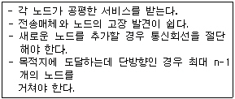
- 완전 연결 구조
- 계층 연결 구조
- 성형 구조
- 링형 구조
(정답률: 65%)
57. UNIX에서 한 프로세스의 출력이 다른 프로세스의 입력으로 사용되는 것을 무엇이라고 하는가?
- 셸(shell)
- 파이프라인(pipeline)
- 백그라운드(background)
- 커널
(정답률: 62%)
58. 분산처리 시스템에서 분산의 대상이 되는 것을 설명한 것 중 옳지 않은 것은?
- 공유자원에 접근할 경우 시스템 유지를 위해 제어를 분산할 필요가 있다.
- 처리기와 입출력 장치와 같은 물리적인 자원을 분산할 수 있다.
- 분산처리시스템에서 분산의 대상이 되는 것은 하드웨어와 제어이며 자료는 분산 대상이 아니다.
- 시스템 성능과 가용성을 증진하기 위해 자료를 분산할 수 있다.
(정답률: 73%)
59. UNIX에서 사용자에 대한 파일의 접근 제한하는데 사용되는 명령은?
- chmod
- grep
- cp
- cat
(정답률: 71%)
60. 페이지 대치 문제에 관련된 사항 중 잘못된 것은?
- 스래싱(thrashing) 현상이 일어나면 시스템의 처리율이 증가한다.
- 시간 지역성이란 최근에 참조한 기억장소가 다시 참조될 가능성이 높다는 것이다.
- 공간 지역성이란 참조된 기억장소에 대해 근처의 기억 장소가 다시 참조될 가능성이 높다는 것이다.
- 어떤 프로세스가 빈번하게 참조하는 페이지들의 집합을 작업세트라 한다.
(정답률: 61%)
4과목: 소프트웨어 공학
61. 소프트웨어 프로젝트 측정에서 신뢰할 만한 비용과 노력 측정을 달성하기 위한 선택사항이 아닌 것은?
- 프로젝트 비용과 측정을 위해 상대적으로 복잡한 분해기술을 이용한다.
- 프로젝트의 정확한 측정을 위해 충분한 시간을 갖고 측정을 한다.
- 하나 이상의 자동화 측정도구들을 이용한다.
- 소프트웨어 비용과 노력에 대한 실험적 모델을 형성한다.
(정답률: 71%)
62. Myers의 응집력 단계 순서(강→약)을 바르게 표시한 것은?
- functional cohesion → communication cohesion → procedural cohesion → temporal cohesion → logical cohesion
- functional cohesion → procedural cohesion → communication cohesion → temporal cohesion → logical cohesion
- procedural cohesion → functional cohesion → communication cohesion → temporal cohesion → logical cohesion
- logical cohesion → procedural cohesion → functional cohesion → communication cohesion → temporal cohesion
(정답률: 37%)
63. 효과적인 모듈화 설계 방안이 아닌 것은?
- 응집도를 높인다.
- 결합도를 낮춘다.
- 복잡도와 중복을 피한다.
- 예측 불가능하도록 정의한다.
(정답률: 79%)
64. 사용자의 요구사항 분석 작업이 어려운 이유와 거리가 먼 것은?
- 개발자와 사용자간의 지식이나 표현의 차이가 커서 상호 이해가 쉽지 않다.
- 사용자의 요구는 예외가 거의 없어 열거와 구조화하기 어렵지 않다.
- 사용자의 요구사항이 모호하고 부정확하며, 불완전하다.
- 개발하고자 하는 시스템 자체가 복잡하다.
(정답률: 67%)
65. 객체지향 테스트를 수행하기 위한 단계의 순서가 옳은 것은?
- 통합 테스팅 - 검증과 시스템 테스팅 - 단위 테스팅
- 검증과 시스템 테스팅 - 단위 테스팅 - 통합 테스팅
- 단위 테스팅 - 통합 테스팅 - 검증과 시스템 테스팅
- 단위 테스팅 - 검증과 시스템 테스팅 - 통합 테스팅
(정답률: 56%)
66. CPM(Critical Path Method) 네트워크에 대한 설명으로 옳지 않은 것은?
- 노드에서 작업을 표시하고 간선은 작업 사이의 전후 의존관계를 나타낸다.
- 프로젝트 완성에 필요한 작업을 나열하고 작업에 필요한 소요기간을 예측하는데 사용한다.
- 박스노드는 프로젝트의 중간 점검을 뜻하는 이정표로 이 노드 위에는 예상완료 시간을 표시한다.
- 한 이정표에서 다른 이정표에 도달하기 전의 작업은 모두 완료되지 않아도 다음 작업을 진행할 수 있다.
(정답률: 63%)
67. 객체지향 모형에서 기능 모형(Functional model)의 설계 순서로 옳은 것은?
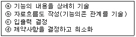
- ⓐ→ⓑ→ⓒ→ⓓ
- ⓐ→ⓒ→ⓑ→ⓓ
- ⓒ→ⓑ→ⓐ→ⓓ
- ⓒ→ⓓ→ⓐ→ⓑ
(정답률: 38%)
68. HIPO(Hierarchy Input Process Output)에 대한 설명으로 옳지 않은 것은?
- 상향식 소프트웨어 개발을 위한 문서화 도구이다.
- 구조도, 개요 도표 집합, 상세 도표 집합으로 구성된다.
- 기능과 자료의 의존 관계를 동시에 표현할 수 있다.
- 보기 쉽고 이해하기 쉽다.
(정답률: 50%)
69. 시스템의 일부 혹은 시스템의 모형을 만드는 과정으로서, 요구된 소프트웨어의 일부를 구현하며, 추후 구현단계에서 사용될 골격코드가 되는 모형은?
- 폭포수 모형
- 점증적 모형
- 프로토타이핑 모형
- 계획수립 모형
(정답률: 68%)
70. Gantt chart에 포함되지 않는 사항은?
- 이정표
- 작업일정
- 작업기간
- 주요 작업경로
(정답률: 57%)
71. 소프트웨어 유지보수의 유형에 해당하지 않는 것은?
- 수정보수(Corrective maintenance)
- 기능보수(Functional maintenance)
- 완전화보수(Perfective maintenance)
- 예방보수(Preventive maintenance)
(정답률: 52%)
72. 일정계획 방법에서 이용되는 PERT/CPM(Program-Evaluation and Review Technique/Critical Path Method)이 제공하는 도구가 아닌 것은?
- 프로젝트 개발기간을 결정하는 임계경로
- 통계적 모델을 적용해서 개별 작업의 가장 근접한 시간 측정 기준
- 정의작업에 대한 시작시간을 정의하여 작업들 간의 경계시간 계산
- 프로젝트 개발기간 중 투입되는 노력과 비용기준
(정답률: 56%)
73. 객체 지향 분석 과정 중 객체들의 제어 흐름, 상호 반응, 연산 순서를 나타내주는 과정은?
- 객체 모델링
- 동적 모델링
- 기능 모델링
- 구조적 모델링
(정답률: 38%)
74. 소프트웨어 재공학의 개념으로 옳지 않은 것은?
- 재공학은 유지보수에 대한 장기적인 전략적 고려와 많은 비용, 시간, 자원을 요구한다.
- 재공학은 유지보수성, 생산성, 품질의 향상을 목적으로 한다.
- 재공학은 형식의 변경과 재설계 과정을 포함한다.
- 재공학은 자사 소프트웨어를 대상으로 소스코드 이상의 추상화 수준으로 명세화하는 과정이다.
(정답률: 48%)
75. 자료흐름도의 구성요소에 대한 표시 기호의 연결이 옳지 않은 것은?
- 발생지/종착지 : 사각형
- 처리공정 : 마름모
- 자료 저장소 : 직선(단선, 이중선)
- 자료 흐름 : 화살표
(정답률: 47%)
76. 소프트웨어 개발 프로젝트를 성공적으로 수행하기 위한 기본 원칙과 거리가 먼 것은?
- 현대적인 프로그래밍 기술 적용
- 결과에 대한 명확한 기록 유지
- 소프트웨어 수명주기에 관련된 계획 및 시행
- 충분한 예비인력의 보유
(정답률: 54%)
77. CASE(Computer Aided Software Engineering)에 대한 설명 중 틀린 것은?
- CASE는 상위(upper) CASE,중위(medium) CASE
- 통합 CASE는 소프트웨어 개발 주기 전체과정을 지원한다.
- 상위 CASE는 요구분석과 설계단계를 지원한다.
- 하위 CASE는 코드를 작성하고 테스트하며 문서화하는 과정을 지원한다.
(정답률: 55%)
78. 모듈화 설계의 장점에 해당하지 않는 것은?
- 확장성
- 융통성
- 복잡성
- 경제성
(정답률: 70%)
79. 화이트박스 검사(test)에 대한 설명 중 잘못된 것은?
- 모듈안의 논리적인 구조를 검사한다.
- 동치 분할(equivalence partitionint)이라는 기법을 사용한다.
- 검사대상의 가능한 경로를 어는 정도 통과하는지의 적용 범위성을 측정기준으로 한다.
- Nassi-Shneiderman 도표를 사용하여 검정기준을 작성할 수 있다.
(정답률: 57%)
80. 소프트웨어 비용을 정확하게 예측하기 위한 방법 중 그 현실성이 적은 것은?
- 경험적 모형을 이용한다.
- 분해기법을 이용한다.
- 예측을 가능한 뒤로 미룬다.
- 과거의 유사한 프로젝트를 이용한다.
(정답률: 72%)
5과목: 데이터 통신
81. 출발지에서 목적지까지 이용 가능한 전송로를 찾아본 후에 가장 효율적인 전송로를 선택하는 것은?
- Routing
- DNS
- Peer
- Hub
(정답률: 72%)
82. 망(network) 구조의 기본 유형이 아닌 것은?
- 스타형
- 링형
- 트리형
- 십자형
(정답률: 72%)
83. 디지털 데이터를 아날로그 신호로 변조하는 방법으로만 묶여 있는 것은?
- 위상 변조, 진폭 변조
- 주파수 변조, 시간 변조
- 진폭 편이 변조, 시간 편이 변조
- 주파수 편이 변조, 위상 편이 변조
(정답률: 55%)
84. 주파수 분할 다중화에서 부 채널간의 간섭을 방지하기 위한 대역은?
- Buffer
- Slot
- Channel
- Guard Band
(정답률: 74%)
85. 송신측에서 정보비트에 오류 정정을 위한 제어 비트를 추가하여 전송하면 수신측에서 이 비트를 사용하여 에러를 검출하고 수정하는 방식은?
- Go back-N 방식
- Selective Repeat방식
- Stop and Wait 방식
- Forward Error Correction 방식
(정답률: 56%)
86. OSI 네트워크 환경에서 사용자에게 서비스를 제공하는 계층은?
- 데이터 링크 계층
- 물리 계층
- 응용 계층
- 세션 계층
(정답률: 63%)
87. TCP/IP의 응용 계층 프로토콜이 아닌 것은?
- TELNET
- SMTP
- ROS
- FTP
(정답률: 63%)
88. 전송할 데이터가 없는 단말장치에도 타임슬롯을 할당하는 시분할 다중화(TDM) 방식은?
- 비동기 시분할 멀티플렉싱
- 통계 시분할 멀티플렉싱
- 동기 시 멀티플렉싱
- 지능형 시분할 멀티플렉싱
(정답률: 37%)
89. TCP/IP 프로토콜을 구성하는 계층이 아닌 것은?
- 표현 계층
- 전송 계층
- 인터넷 계층
- 링크 계층
(정답률: 48%)
90. 데이터 비트 7bit, start 와 stop 및 패리티비트가 각각 1bit로 구성된 1600bps의 회선을 사용하여 비동기식으로 전송하면 데이터 최대 전송 속도는 얼마인가?
- 9600(자/분)
- 7200(자/분
- 9000(자/분)
- 8200(자/분)
(정답률: 52%)
91. 데이터링크 제어 프로토콜로 올바른 것은?
- TCP
- DTE/DCE
- HDLC
- UDP
(정답률: 52%)
92. 토큰링 방식에 사용되는 네트워크 표준안은?
- IEEE 802.2
- IEEE 802.3
- IEEE 802.5
- IEEE 802.6
(정답률: 61%)
93. 패킷(packet) 교환과 관계가 없는 것은?
- 패킷 단위로 데이터 전송
- 메시지 단위로 데이터 전송
- 가상회선 방식
- 데이터그램 방식
(정답률: 51%)
94. HDLC의 프레임 구조를 올바르게 나타낸 것은?
- 플래그-제어부-주소부-정보부-FCS-플래그
- 플래그-제어부-정보부-주소부-FCS-플래그
- 플래그-주소부-제어부-정보부-FCS-플래그
- 플래그-정보부-제어부-주소부-FCS-플래그
(정답률: 58%)
95. PCM의 단계를 올바르게 나타낸 것은?
- 표본화→양자화→부호화
- 표본화→부호화→양자화
- 양자화→부호화→표본화
- 양자화→표본화→부호화
(정답률: 71%)
96. 어느 회선의 속도가 400보오(baud)이고, 각 신호가 4비트의 정보를 나타낸다면 데이터 전송율은 몇 bps인가?
- 400bps
- 800bps
- 1600bps
- 3200bps
(정답률: 68%)
97. 여러 개의 터미널 신호를 하나의 통신회선을 통해 전송할 수 있도록 하는 장치는?
- 변·복조기
- 멀티플렉서
- 신호변환기
- 디멀티플렉서
(정답률: 60%)
98. TCP/IP 프로토콜의 IP 계층에 대응하는 OSI 참조 모델의 계층은?
- 물리 계층
- 전송 계층
- 네트워크 계층
- 세션 계층
(정답률: 61%)
99. 데이터(Data) 전송제어의 순서 중 옳게 나열된 것은?
- 회선접속→데이터링크 확립→정보 전송→회선절단→데이터링크 해제
- 데이터링크 확립→회선접속→정보 전송→데이터링크 해제→회선절단
- 회선접속→데이터링크 확립→정보 전송→데이터링크 해제→회선절단
- 데이터링크 확립→회선접속→정보 전송→회선절단→데이터링크 해제
(정답률: 70%)
100. 홀수 패리티 비트를 사용하여 문자를 전송할 경우 에러가 일어난 경우는?
- 11100011
- 11101111
- 10101011
- 11100111
(정답률: 56%)